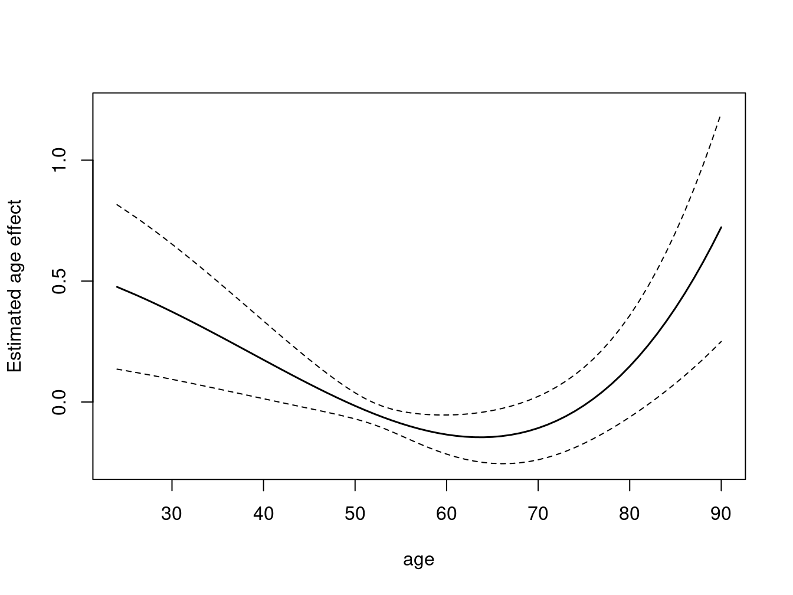
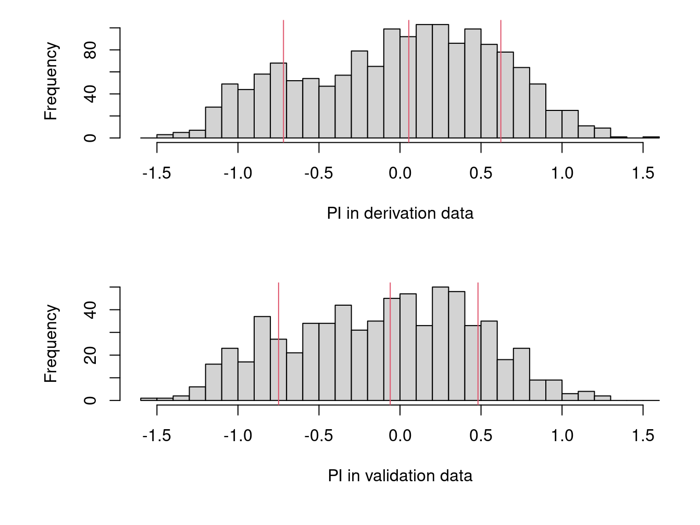
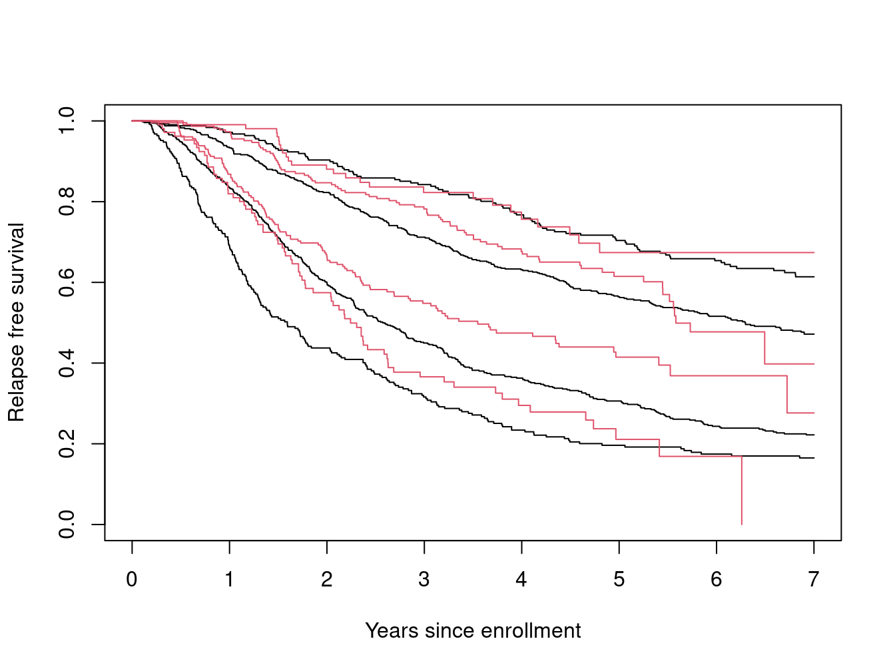

rotterdam2 <- subset(rotterdam, nodes>0)
table(rotterdam2$size)
#>
#> <=20 20-50 >50
#> 501 783 262
table(rotterdam2$meno)
#>
#> 0 1
#> 628 918
table(rotterdam2$hormon)
#>
#> 0 1
#> 1207 339
round(c(mean(rotterdam2$age), sd(rotterdam2$age)), 1)
#> [1] 56 13
round(c(mean(rotterdam2$nodes),sd(rotterdam2$nodes)), 1)
#> [1] 5.2 4.9
round(c(mean(rotterdam2$pgr), sd(rotterdam2$pgr)), 1)
#> [1] 156.2 299.4
round(c(mean(rotterdam2$er), sd(rotterdam2$er)),1)
#> [1] 165.1 267.3Recreating a Royston and Altman paper
1 Introduction
The paper by Royston and Altman P. Royston and Altman (2013) on Cox model validation is a delightfully clear exposition of the important principles. As well, they made use of, and documented, datasets that others can use. The rotterdam and gbsg datasets from their work have been incorporated into the survival package.
This short note describes that process, and more importantly, attempts to recreate some of the results of their paper as a way of validating that the data was created correctly.
The main paper refers to a web site www.stata-press.com/data/fpsaus.html. That in turn hosts all of the datasets and Stata code for a book by Royston and Lampert Patrick Royston and Lambert (2011). Following the URL leads to a dataset rott2, imported from a Stata file rott2.dta. Variable labels make it fairly easy to set up the new dataset. There were a few variables that we did not copy.
mf, mfi: time to metastasisenodes: exp(-0.12*nodes)pr\_1: log(pr +1)enod_1: enodes*enodesrecent: year of surgery dichotomized as \(\le 1987\) (0) vs \(\ge 1988\) (1)_st: 1 for all rows_d: equal torecurif rtime < 10 years, 0 otherwise_t: recurrence time, truncated at 10 years_t0: 0 for all rows
The Rotterdam data contains 2982 subjects.
The article makes the statement that the endpoint for fits to the Rotterdam data is relapse-free survival (RFS), the earlier of death or relapse, censored at 84 months, and that they will omit those with nodes=0. It also has the statement that “The Rotterdam data (with RFS truncated to 120 months) can be downloaded from www.stat-press.com.”, I expect this latter statement has caused many to assume that the (_t, _d) pair in that dataset contains RFS values, but examination shows that they encode 10 year relapse.
Table 1 shows the distribution for 1546 subjects, the number with nodes > 0. The distribution below, from the R dataset, matches the table with the exception of the mean estrogen receptor (ER) level. If I winsorize that at 2000 to exclude large outliers, however, I match the table.
The Cox model in the paper was fit using fractional polynomials. If we use the RPS at 84 months = 7 years, the model fit looks like the following. As noted in the help file for the rotterdam data, there are 43 subjects who have died without recurrence, but whose death time is greater than the censoring time for recurrence; and exactly how best to handle these is debatable. Consider subject 191 who is censored for recurrence at 13 months, with death at 52 months. We could code this subject as censored at 13 or an RFS event at 52. The latter implicitly assumes that there was no recurrence in the unobserved period from 13 to 52 months, over 3 years.
For a tertiary care center in the US, where a subject is likely to return to their home physician after the primary cancer treatment, this is not a tenable assumption. If they had recurred, we would not have found out about it due to disjoint medical records systems, and the safer course is to censor at 13. In a national health care system such as the Netherlands, where this study was conducted, such an assumption is more reasonable. In this case, ignoring the gaps and using the later death leads to 965 events, which matches the description on page 3 of the paper.
y7 <- round(7*365.25) # 7 years or 84 months
r7 <- rotterdam2
r7$recur <- ifelse(r7$rtime > y7, 0, r7$recur)
r7$rtime <- pmin(r7$rtime, y7)
r7$death <- ifelse(r7$dtime > y7, 0, r7$death)
r7$dtime <- pmin(r7$dtime, y7)
r7$rfstime <- with(r7, ifelse(recur==1, rtime, dtime)) # time to recur or death
r7$rfs <- with(r7, pmax(death, recur))
table(r7$rfs)
#>
#> 0 1
#> 581 965
agefun <- function(x) cbind((x/100)^3, (x/100)^3 * log(x/100))
cfit <- coxph(Surv(rfstime, rfs) ~ agefun(age) + meno + size +
I(1/sqrt(nodes)) + I(er/1000) + hormon,
data= r7, ties="breslow")
cbind("cfit"= round(coef(cfit),3),
"paper"= c(1.07, 9.13, 0.46, 0.23, 0.31, -1.74, -0.34, -0.35))
#> cfit paper
#> agefun(age)1 1.074 1.07
#> agefun(age)2 9.133 9.13
#> meno 0.463 0.46
#> size20-50 0.234 0.23
#> size>50 0.541 0.31
#> I(1/sqrt(nodes)) -1.737 -1.74
#> I(er/1000) -0.338 -0.34
#> hormon -0.346 -0.35The dataset is also available from Sauerbrei et al Sauerbrei, Royston, and Look (2007). That version does not have the overall survival and death variables, but includes two categorical variables sized1 = 1 if size \(>20\) and sized2 = 1 if size \(> 50\), which match the variable names found in table 2, and resolves the coefficient difference we see above for the size > 50 group: our coefficient is the sum of the sized1 and sized2 coefficients in their table.
They had used contrasts of group 2 vs. 1 and 3 vs. 2, while we have 2 vs. 1 and 3 vs. 1.
A termplot reveals the non-linear age effect. Both young and old subjects are at higher risk.
termplot(cfit, term=1, ylab="Estimated age effect", col.term=1, col.se=1,
se=TRUE)
2 GBSG data
The GBSG dataset found in the reference is somewhat simpler, in that it only contains the RFS outcome. The GBSG dataset has no node-negative subjects, and tumor size is continuous rather than being categorical.
The dataset has again, exact agreement with table 1.
table(cut(gbsg$size, c(0, 20, 50, 150), c("<=20", "20-50", ">50")))
#>
#> <=20 20-50 >50
#> 180 453 53
table(gbsg$meno)
#>
#> 0 1
#> 290 396
table(gbsg$hormon)
#>
#> 0 1
#> 440 246
round(c(mean(gbsg$age), sd(gbsg$age)), 1)
#> [1] 53.1 10.1
round(c(mean(gbsg$nodes),sd(gbsg$nodes)), 1)
#> [1] 5.0 5.5
round(c(mean(gbsg$pgr), sd(gbsg$pgr)), 1)
#> [1] 110.0 202.3
round(c(mean(gbsg$er), sd(gbsg$er)), 1)
#> [1] 96.3 153.1Validation is made easier if we create a version of the GBSG dataset whose variable names exactly match the Rotterdam derivation dataset. Then create a PI variable using the rotterdam fit.
gbsg2 <- gbsg
gbsg2$size <- cut(gbsg$size, c(0, 20, 50, 150), c("<=20", "20-50", ">50"))
gbsg2$rfs <- gbsg2$status
gbsg2$PI <- predict(cfit, newdata=gbsg2)The histogram of the risk scores appears to match that in Figure 1.

And here is Figure 2, comparing the KM curves, by PI group.
grp1 <- cut(PI1, quantile(PI1, c(0, .16, .5 , .84, 1)), include.lowest=TRUE)
km1 <- survfit(Surv(rfstime, rfs) ~ grp1, r7)
plot(km1, xscale=365.25, xlab="Years since enrollment",
ylab="Relapse free survival")
grp2 <- cut(PI2, quantile(PI2, c(0, .16, .5 , .84, 1)), include.lowest=TRUE)
km2 <- survfit(Surv(rfstime, rfs) ~ grp2, gbsg2)
lines(km2, col=2)
The curves for the validation group have similar spread to those for the development dataset. The GBSG dataset shows fewer early deaths than predicted; however, this is not surprising. The Rotterdam study enrolled all breast cancer subjects while the GBSG data is from a clinical trial, and cancer clinical trial subjects very often have an initial “death honeymoon”, for a variety of reasons: eligibility criteria often explicitly ask for subjects with a minimal expected survival, or implicitly so by excluding those with low Karnofsky scores, while subjects who are in extremis are themselves less likely to volunteer.
3 References
Royston, P., and D. G. Altman. 2013. “External Validation of a Cox Prognostic Model: Principles and Methods.” BMC Medical Research Methodology 13. https://bmcmedresmethodol.biomedcentral.com/articles/10.1186/1471-2288-13-33.
Royston, Patrick, and Paul C. Lambert. 2011. Flexible Parametric Survival Analysis Using Stata: Beyond the Cox Model. Stata Press.
Sauerbrei, W., P. Royston, and M. Look. 2007. “A New Proposal for Multivariable Modelling of Time-Varying Effects in Survival Data Based on Fractional Polynomial Time-Transformation.” Biom J 49: 453–73.